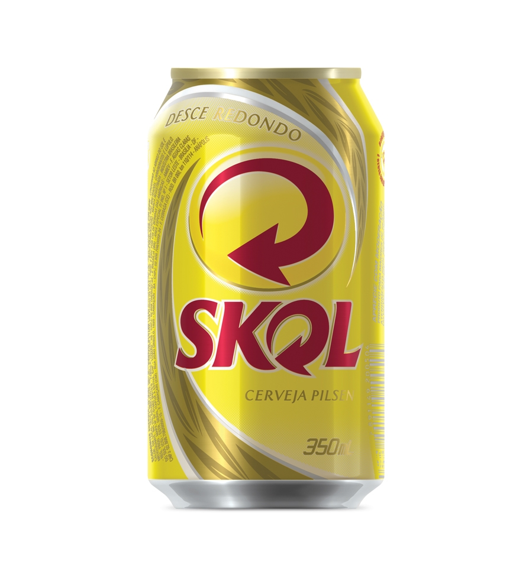

<!--
  Generated template for the CervejasPage page.

  See http://ionicframework.com/docs/components/#navigation for more info on
  Ionic pages and navigation.
-->
<ion-header>

  <ion-navbar>
    <ion-title>Cervejas</ion-title>
  </ion-navbar>

</ion-header>


<ion-content padding>

    <ion-list>
        <ion-item>
          <ion-thumbnail item-start>
            
          </ion-thumbnail>
          <h2>Skol</h2>
          <p>Lata 350ml</p>
          <button (click)="showConfirm()" ion-button>Pedir</button>
        </ion-item>
      </ion-list>
</ion-content> 
